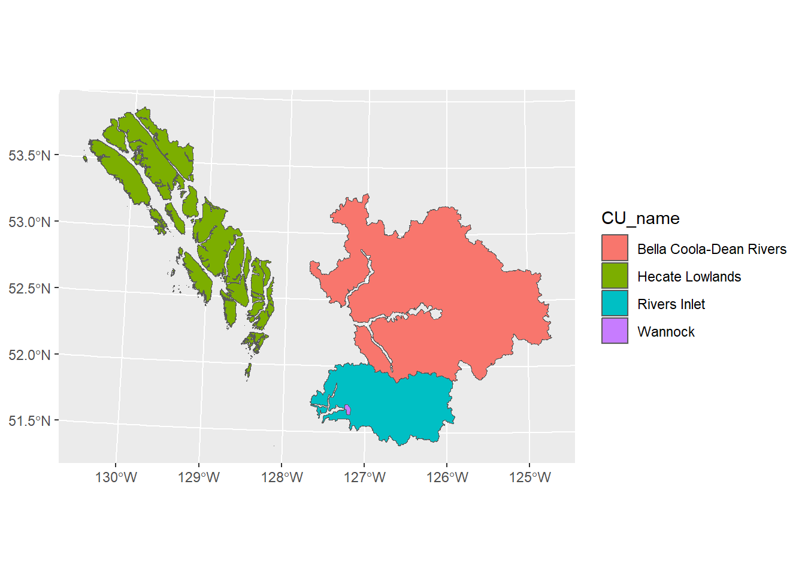
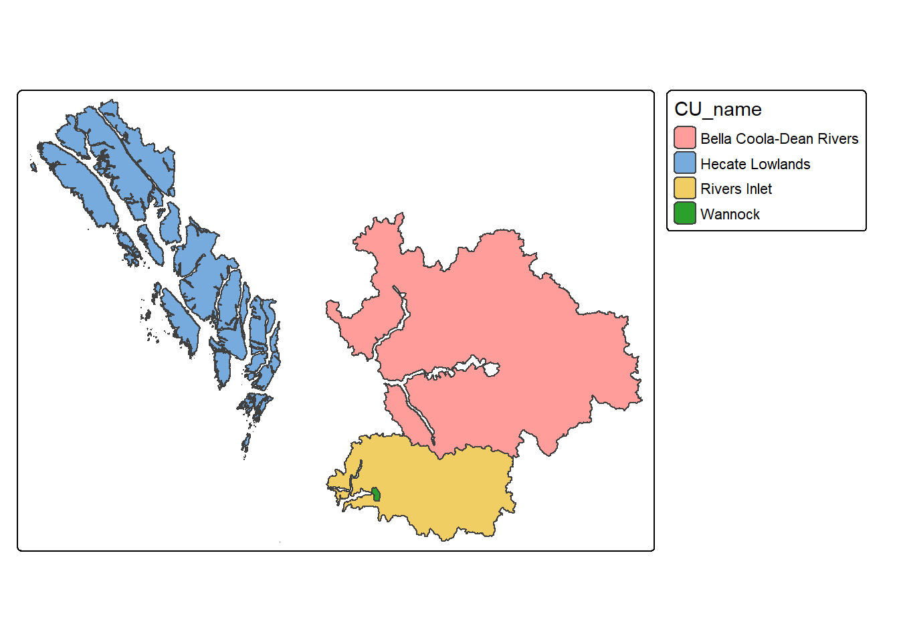
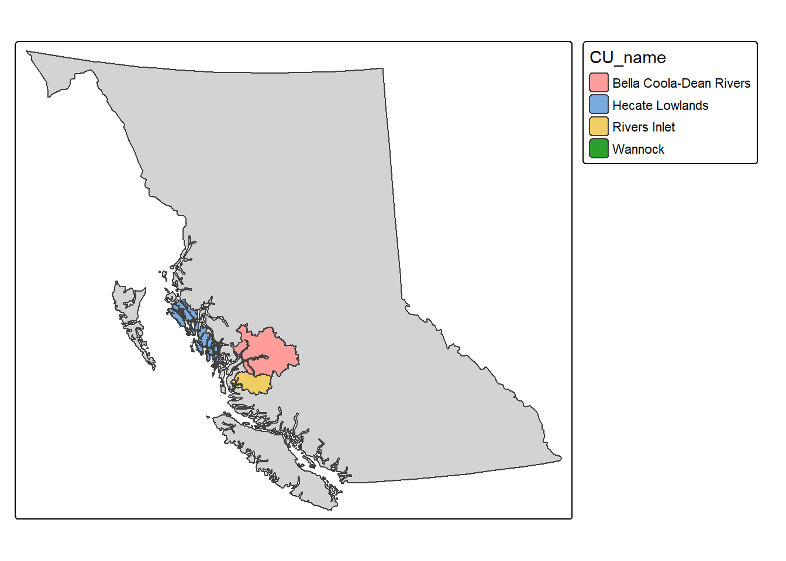
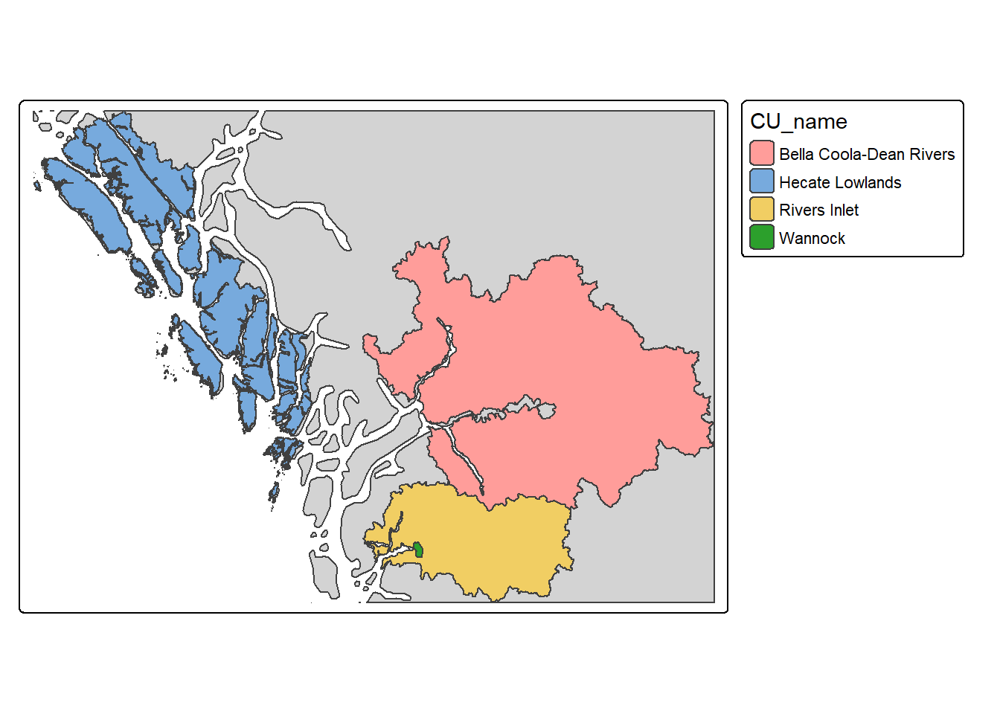
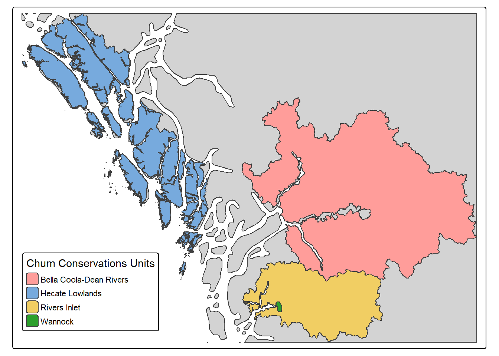
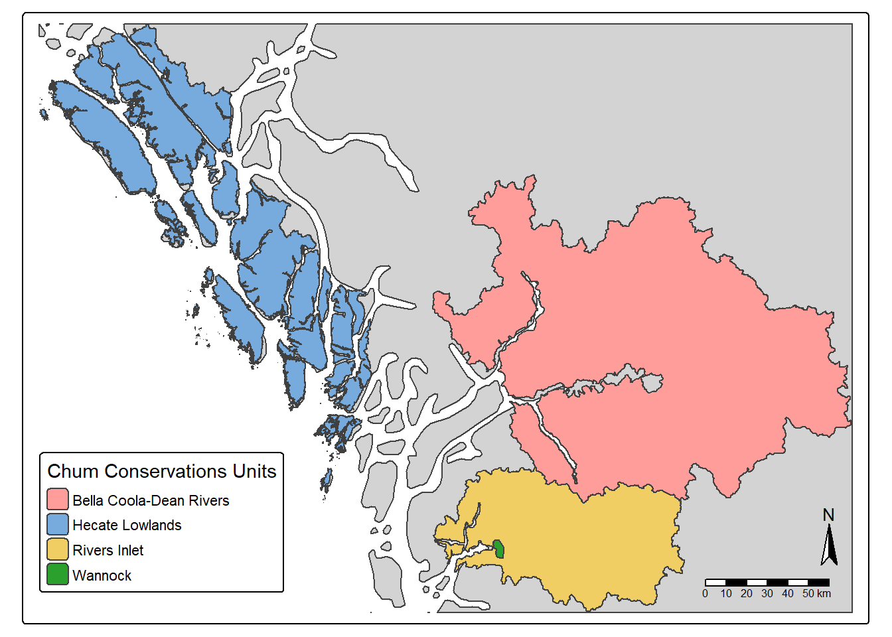
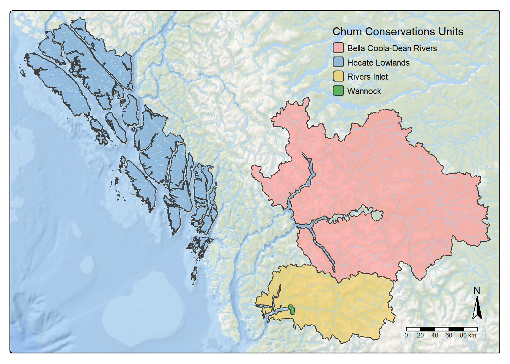

library(sf)
library(dplyr)Making Maps in R
A brief overview of how to start making maps in R
Why use R to make maps?
Have you ever had to make multiple maps of the same place but showing different things? Do you ever wish you could simply integrate your data analysis with geographic shapes? No? Well, too bad because this is a way to do that. When it comes to making maps in R, the cartographer in me cringes. If you know what you’re doing with a dedicated GUI-centered GIS, I suggest sticking with those, they can help you make some truly nice maps. However, I think you could spend quite some time and a lot of lines of code making something that approaches a nice map in R, and you can definitely create most of what people are pumping out of ArcPro and QGIS. If you’re just looking to show a few shapes, make a basic map for scientific publication, or have a data-heavy workflow, then cartography in R can be the right choice. With that out of the way, let’s get into it.
Data and Spatial Packages
To handle spatial data, we use the sf and dplyr packages. The sf package makes working with spatial data in R very similar to working with any other dataset. It enables a ‘sticky’ geometry column that remains with the data regardless of how it is processed. The stickiness makes it easy to subset columns and perform spatial operations. However, it can significantly slow down non-spatial operations, particularly on large datasets. Handling the geometry column explicitly (for example with st_drop_geometry()) can speed up non-spatial data-manipulation tasks.
We’ll use these packages along with the bcdata and bcmaps packages to load some example data for testing out the maps. Here we are pulling a BC boundary file with bcmaps and also loading a dataset of chum salmon CUs I have hanging around. For context, we will also load larger rivers from bcdata that intersect those CUs.
prov <- bcmaps::bc_bound()
cus <- st_read("C:/Users/finnr/Documents/Data Library/Salmon CUs/Chum_Salmon_CU_Boundary/Chum_Salmon_CU_Boundary_3005.shp") %>%
filter(CU_name %in% c("Rivers Inlet", "Hecate Lowlands", "Bella Coola-Dean Rivers", "Wannock")) %>%
st_transform(., st_crs(prov))
rivers <- bcdata::bcdc_query_geodata("https://catalogue.data.gov.bc.ca/dataset/a1b9c58f-c32e-498e-94c1-a6e46ef287b2") %>%
filter(INTERSECTS(cus)) %>%
bcdata::collect()To visualize spatial data I generally use two packages and switch between them depending on the task.
library(ggplot2)
library(tmap)Map Packages
ggplot2
Most of the time when I’m working with spatial data and I want to look at the geometry I use ggplot2 because I already have the package loaded. The code below produces a very simple depiction of the spatial information. I haven’t made many maps with ggplot2, but there are a few sources out there with examples of simple maps that look good. ggplot2 also relies on various additional packages that provide greater functionality (e.g. ggspatial and ggmap). I’ve linked some resources below as well.
https://bookdown.org/nicohahn/making_maps_with_r5/docs/ggplot2.html
https://upgo.lab.mcgill.ca/2019/12/13/making-beautiful-maps/
https://paleolimbot.github.io/ggspatial/
https://cran.r-project.org/web/packages/ggmap/readme/README.html
ggplot(cus) + geom_sf(aes(fill = CU_name))
tmap
https://r-tmap.github.io/tmap/index.html
tmap is probably the most straightforward package for cartography in R. It uses a simple formula to build up the map based on layering. I’ve found it’s fairly actively developed, so some of this code might not work depending on your R and package versions. I ran into an issue with the inset map. Generally speaking I find the website to be very helpful, and at this point many AI coding assistants will be helpful if you specify the package you’re using.
Layout
https://r-tmap.github.io/tmap/articles/basics_vv
https://r-tmap.github.io/tmap/articles/adv_positions
You can view the geography of a layer by using the following two lines of code. The first defines the data to be used, while the second defines how it should be displayed. The CUs are polygons, so I used tm_shape() and CU_name to color them.
tm_shape(cus) +
tm_polygons(fill = "CU_name")
The next step is to provide some context for these floating shapes by using the provincial shapefile as the base, then layering these CUs on top. Each time I add a new dataset, I use tm_shape() followed by a function that defines how to display it.
tm_shape(prov) +
tm_polygons(fill = "lightgrey") +
tm_shape(cus) +
tm_polygons(fill = "CU_name")
The result shows the entire province, which isn’t helpful for this purpose. While we want the province to be the first layer of the map, we need to set the extent of the map to the CU data.
You can set the extent of the map by first cropping the provincial data to the bounding box of the CUs. Then pipe that result directly into the code above. The st_crop function comes from the sf package.
st_crop(prov, st_bbox(cus)) %>%
tm_shape(.) +
tm_polygons(fill = "lightgrey") +
tm_shape(cus) +
tm_polygons(fill = "CU_name")
Map Components
https://r-tmap.github.io/tmap/articles/basics_components
The legend that tmap automatically generates can be repositioned and customized. Within the function used to define how the data should be displayed, the fill.legend argument combined with the tm_legend function let you rename the title, reposition it, resize it, and change other options. Below, I place the legend on top of the map frame and move it to the lower-left corner. The numbers in the tm_pos_on_top function represent percentages of the overall map where the top-left corner of the legend should be placed.
st_crop(prov, st_bbox(cus)) %>%
tm_shape(.) +
tm_polygons(fill = "lightgrey") +
tm_shape(cus) +
tm_polygons(fill = "CU_name",
fill.legend =
tm_legend(
position = tm_pos_on_top(0.02, 0.28),
title = "Chum Conservations Units")) 
We can also add north arrows and scale bars if required for the map you’re making. Each of these has a dedicated function, and each comes with many options for customizing appearance and position.
st_crop(prov, st_bbox(cus)) %>%
tm_shape(.) +
tm_polygons(fill = "lightgrey") +
tm_shape(cus) +
tm_polygons(fill = "CU_name",
fill.legend =
tm_legend(
position = tm_pos_on_top(0.02, 0.28),
title = "Chum Conservations Units")) +
tm_compass() +
tm_scalebar()
Basemaps
https://r-tmap.github.io/tmap/articles/basics_basemaps
There are plenty of basemaps available through tmap functions directly. I’ve found this is generally as far as I’ll go in R. If I want more detail I switch to QGIS because it’s simpler to get a specific look there. But if I need to make similar maps repeatedly, tmap in R can be the right approach. There is plenty more you can do with tmap, including changing the layout with tm_layout().
# st_crop(prov, st_bbox(cus)) %>%
# tm_shape(.) +
# tm_polygons(fill = "grey",
# fill_alpha = 0.5) +
tm_shape(cus) +
tm_polygons(fill = "CU_name",
fill.legend =
tm_legend(
position = tm_pos_on_top(0.65, 0.97),
title = "Chum Conservations Units",
frame = FALSE,
bg = FALSE),
fill_alpha = 0.7) +
tm_compass() +
tm_scalebar() +
tm_shape(st_crop(rivers, st_bbox(st_buffer(cus, 300)))) +
tm_lines(lwd = 0.5,
col = "lightblue") +
tm_shape(cus) +
tm_borders() +
tm_basemap("Esri.OceanBasemap")
Other Sources
This is a good all-around guide to making maps in R that I’ve found helpful.